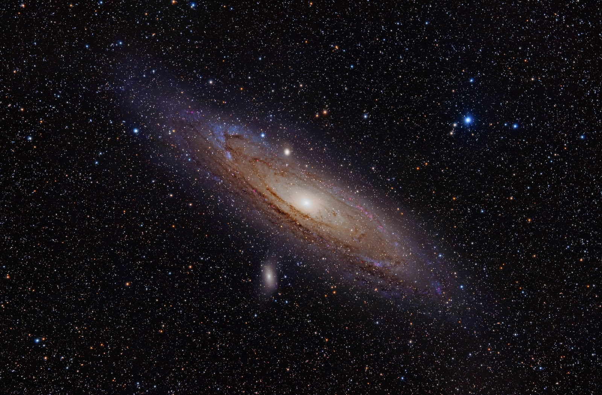
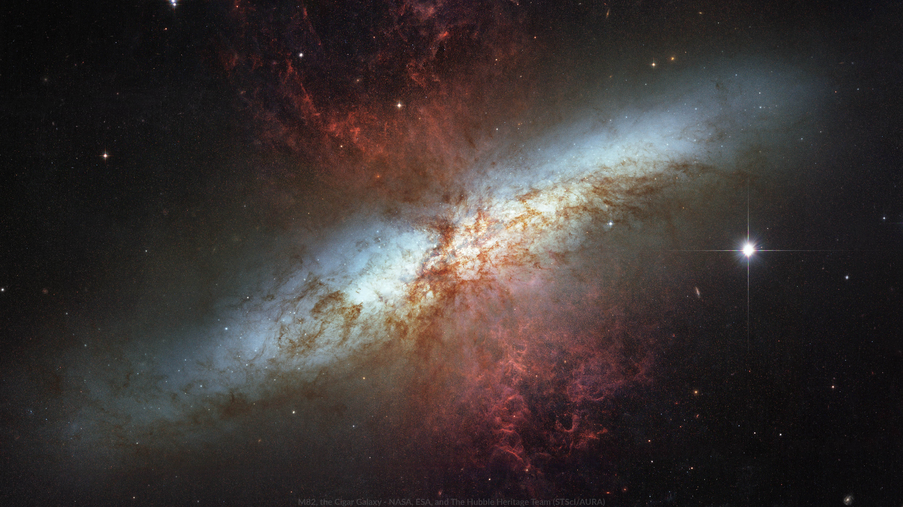
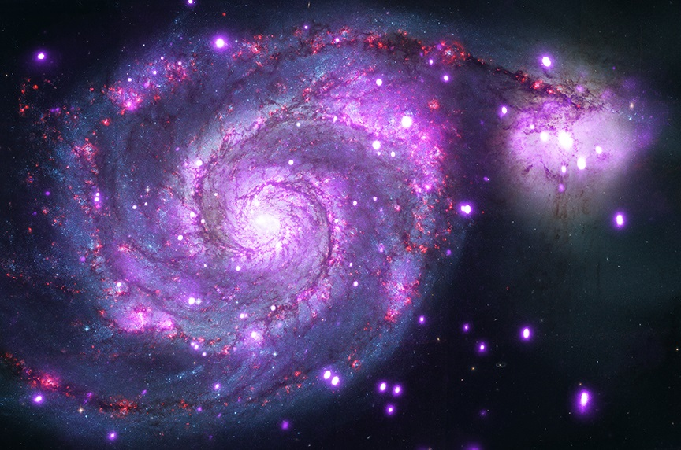
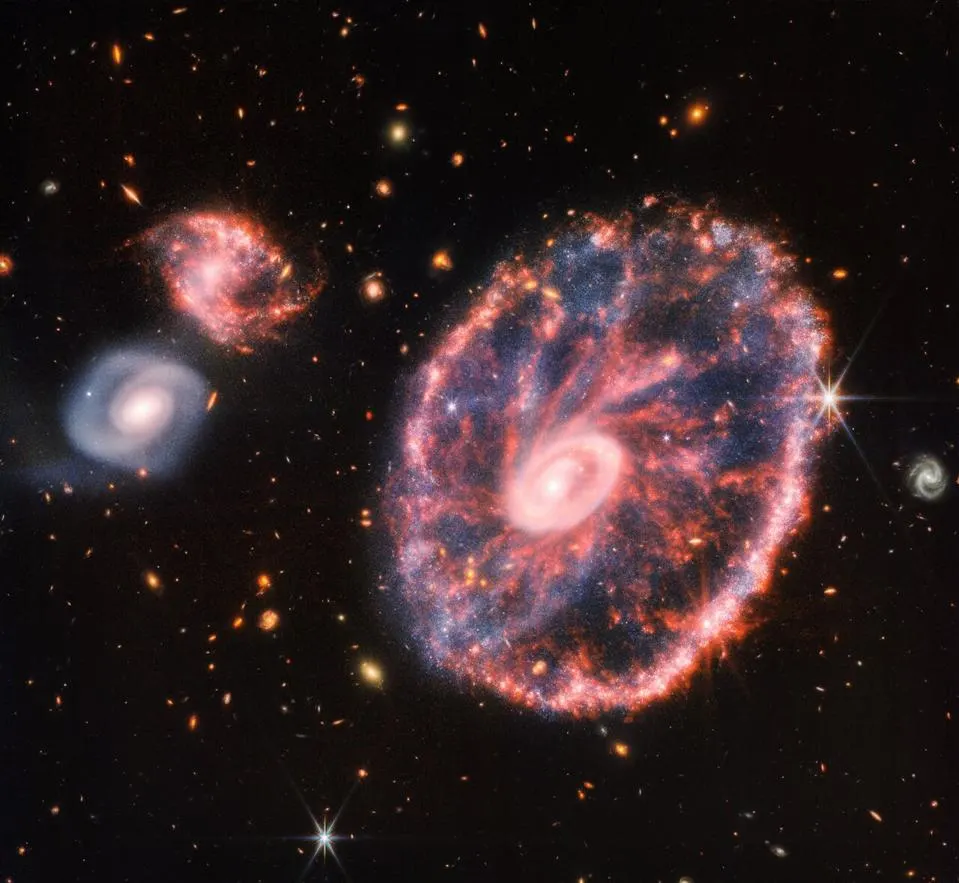
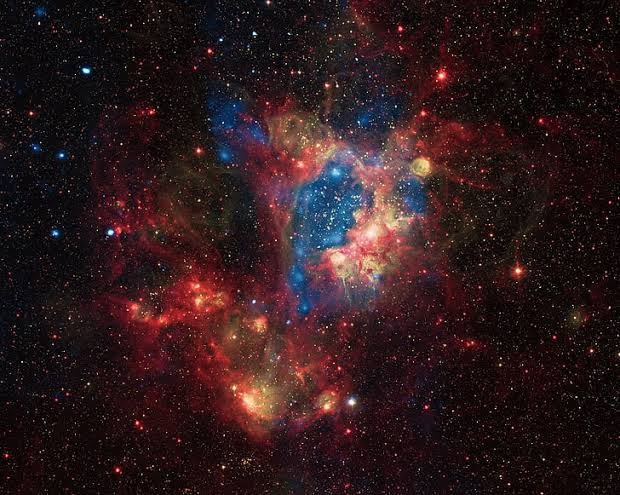
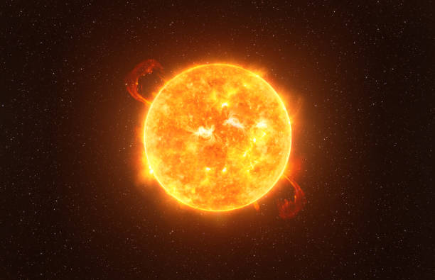
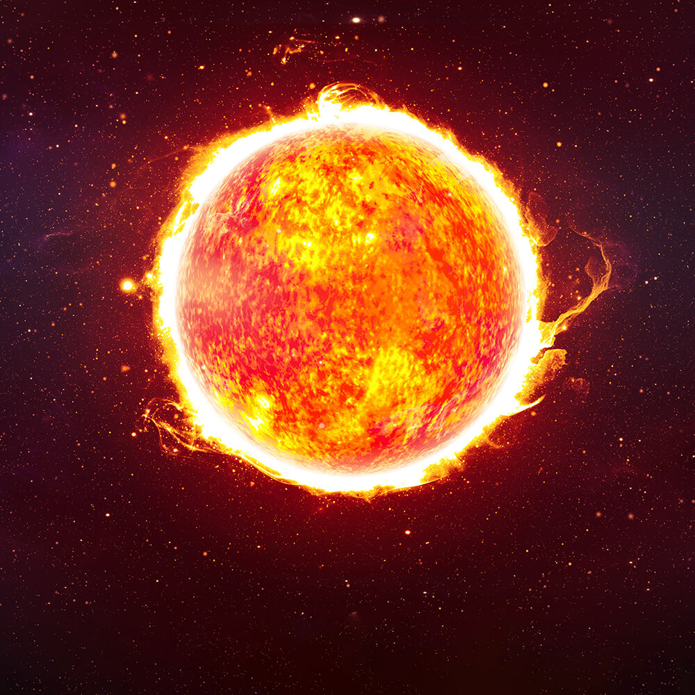
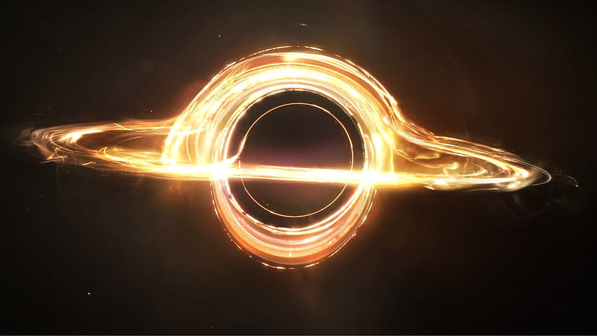
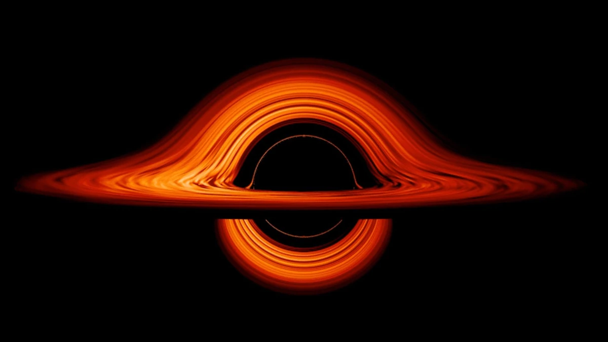

Andromeda galaxy
The Andromeda Galaxy is a barred spiral galaxy and is the nearest major galaxy to the Milky Way. It was originally named the Andromeda Nebula and is cataloged as Messier 31, M31, and NGC 224. Andromeda has a diameter of about 46.56 kiloparsecs and is approximately 765 kpc from Earth.

Milky Way
The Milky Way is the galaxy that includes the Solar System, with the name describing the galaxy's appearance from Earth: a hazy band of light seen in the night sky formed from stars that cannot be individually distinguished by the naked eye.

Cigar Galaxy
Messier 82 (M82), or the Cigar Galaxy, is an edge-on spiral undergoing a massive burst of star formation in its core. Many thousands of stars, and their surrounding gas and dust, have been stirred up. These stars are expelling violent winds that are blowing gas and dust out of the galaxy.

Whirlpool Galaxy
The galaxy is officially named Messier 51 (M51) or NGC 5194, but often goes by its nickname of the “Whirlpool Galaxy.” Like the Milky Way, the Whirlpool is a spiral galaxy with spectacular arms of stars and dust.

Cartwheel Galaxy
The Cartwheel Galaxy is a lenticular ring galaxy about 500 million light-years away in the constellation Sculptor. It has a D₂₅ isophotal diameter of 44.23 kiloparsecs, and a mass of about 2.9–4.8 × 10⁹ solar masses; its outer ring has a circular velocity of 217 km/s. It was discovered by Fritz Zwicky in 1941.

Black Eye Galaxy
The Black Eye Galaxy (also called Sleeping Beauty Galaxy or Evil Eye Galaxy and designated Messier 64, M64, or NGC 4826) is a relatively isolated spiral galaxy 17 million light-years away in the mildly northern constellation of Coma Berenices.

Large Magellanic Cloud
The Large Magellanic Cloud is a satellite galaxy of the Milky Way. At a distance of around 50 kiloparsecs, the LMC is the second- or third-closest galaxy to the Milky Way, after the Sagittarius Dwarf Spheroidal and the possible dwarf irregular galaxy called the Canis Major Overdensity.

Sombrero Galaxy
The Sombrero Galaxy is a peculiar galaxy of unclear classification in the constellation borders of Virgo and Corvus, being about 9.55 megaparsecs from the Milky Way galaxy. It is a member of the Virgo II Groups, a series of galaxies and galaxy clusters strung out from the southern edge of the Virgo Supercluster.

Betelgeuse
Betelgeuse is a red supergiant star of spectral type M1-2 and one of the largest visible to the naked eye. It is usually the tenth-brightest star in the night sky and, after Rigel, the second-brightest in the constellation of Orion.

star UY Scuti
UY Scuti is a red supergiant star in the constellation Scutum. It is possibly considered one of the largest known stars by radius and is also a pulsating variable star, with a maximum brightness of magnitude 8.29 and a minimum of magnitude 10.56

TON 618
TON 618 is a hyperluminous, broad-absorption-line, radio-loud quasar and Lyman-alpha blob located near the border of the constellations Canes Venatici and Coma Berenices, with the projected comoving distance of approximately 18.2 billion light-years from Earth.

Abell 1201 BCG
Abell 1201 BCG is a type-cD massive elliptical galaxy residing as the brightest cluster galaxy of the Abell 1201 galaxy cluster. At a redshift of 0.169, this system is around 2.7 billion light-years from Earth, and offset about 11 kiloparsecs from the X-ray peak of the intracluster gas.


{kind=link}
{kind=link}
{kind=link}
{kind=link}
{kind=link}
{kind=link}
{kind=link}
{kind=link}
{kind=link}